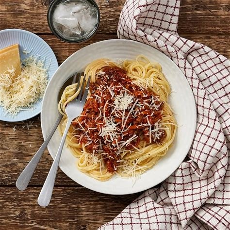

Spaghetti med köttfärssås

En klassisk spaghetti med smakrik köttfärssås som passar perfekt till en enkel och god middag.
Tillagning: | Svårighetsgrad: Lätt | 4 portioner
Ingredienser
- 400 g spaghetti
- 500 g köttfärs, alternativt vegetariskt färs
- 1 gul lök
- 2 vitlöksklyftor
- 1 burk krossade tomater (400 g)
- 2 msk tomatpuré
- 1 dl grädde eller crème fraîche
- 1 tsk oregano
- 1 tsk basilika
- 1/2 tsk salt
- 1/2 tsk svartpeppar
- 1 msk olivolja
- 1/2 dl vatten eller buljong
- Parmesan eller riven ost till servering
Gör så här
- Koka spaghetti enligt paketets anvisningar.
- Hetta upp oljan i en panna och fräs löken i 3–4 minuter.
- Lägg i köttfärsen och stek tills den blir genomstekt. Bryt den med en sked.
- Tillsätt vitlök, tomatpuré, oregano och basilika. Rör om.
- Häll i krossade tomater och vatten eller buljong. Krydda med salt och peppar.
- Låt såsen sjuda i 10–15 minuter på medelvärme.
- Rör i grädde om du vill ha en krämigare sås.
- Servera såsen över spaghettin och toppa med parmesan.